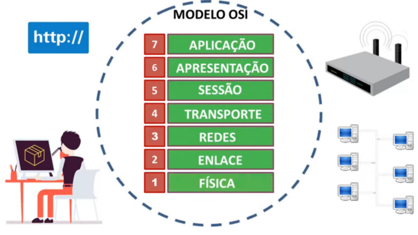
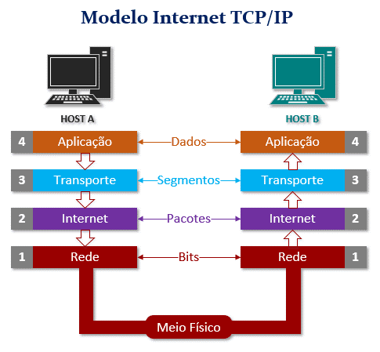
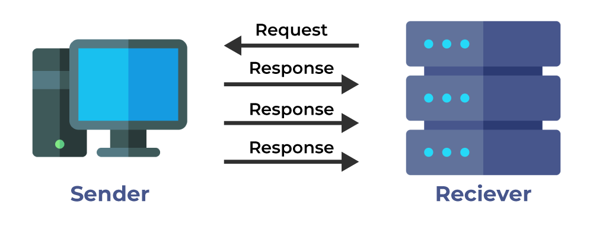
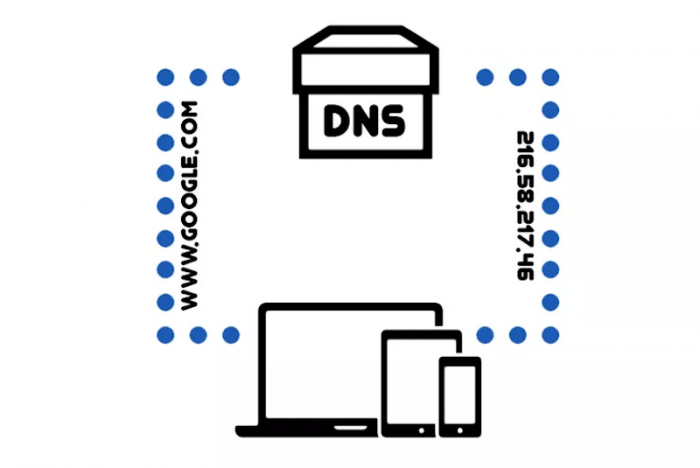

O modelo de interconexão de sistemas abertos (OSI) é um modelo conceitual criado pela Organização Internacional de Normalização que permite que diversos sistemas de comunicação se comuniquem usando protocolos padronizados.
Ele faz uso de sete camadas para garantir essa conversa. A maioria das empresas da área de computadores e telecomunicações o adotou no início dos anos 80. A partir daí, a Organização Internacional de Normalização (ISO) o transformou na principal referência em 1984.
TCP/IP é um conjunto de protocolos e um modelo de comunicação de rede. Ele serve para, principalmente, viabilizar a troca de informações entre ORIGEM e DESTINO.
Sua importância é enorme. Sem a presença desse conjunto, seria impossível definir os padrões de transmissão, que são adotados por diferentes dispositivos das mais variadas aplicações.
Por meio destes protocolos, toda a internet é endereçada, permitindo que a troca de informações seja feita entre as mais variadas origem e destinos.
O User Datagram Protocol (UDP) é um protocolo de Internet mais simples e sem conexão, no qual os serviços de verificação e recuperação de erros não são necessários. Com o UDP, não há sobrecarga para abrir, manter ou encerrar uma conexão, os dados são continuamente enviados para o destinatário, quer ele os receba ou não.
O protocolo UDP funciona de forma semelhante ao TCP, mas elimina todo o material de verificação de erros. Toda a comunicação de ida e volta introduz latência, tornando as coisas mais lentas.
Trata-se do Sistema de Nomes de Domínio. É o DNS que traduz endereços IP (Internet Protocol) em nomes de sites.
Existem duas formas de acessar um site na internet: digitando o nome de domínio que você já está acostumado ou digitando o endereço IP da sua hospedagem.
Cada nome de domínio tem um único número IP e você não verá mais de um site com a mesma URL.Porém, nomes de domínios diferentes podem encaminhar você de um site para outro. Basta que o responsável compre o direito de usar todos ao mesmo tempo.
O protocolo DHCP (Dynamic Host Configuration Protocol), nada mais é do que um provedor que faz com que as máquinas dentro de determinada rede consigam obter um endereço de IP de maneira automática.
Sua função é atribuir automaticamente aos dispositivos conectados:
• endereço IP;
• gateway padrão;
• máscara de sub-rede;
• entre outras configurações.
O protocolo FTP é usado para transferências de arquivos entre um servidor, sistema de armazenamento ou outro dispositivo através de uma conexão de rede.
Ele utiliza dois canais básicos para operar, um de comando e um de dados.
O TCP/IP (Transmission Control Protocol/Internet Protocol) é a linguagem que a internet usa para executar esses comandos e transferir arquivos através do FTP.
O HTTP é uma sigla para Hypertext Transfer Protocol, e ele é considerado um protocolo que serve para a comunicação.
Utilizado principalmente na rede e na internet para transferir os dados entre o computador de um usuário e o servidor de hipermedia.
Em outras palavras: o HTTP é responsável por cada um dos bytes de informações ou dados que trafegam e navegam entre o seu PC, celular, ou outros dispositivos, e os servidores de rede, ou seja, de internet.
O HTTPS é uma sigla para Hypertext Transfer Protocol Secure. Essa é uma versão de protocolo idêntica ao HTTP, com a diferença de ser sobre uma camada totalmente SSL.
Essa camada SSL, adicional, permite que as informações sejam transmitidas através de uma conexão que é totalmente criptografada e que a autenticidade do servidor e do cliente sejam verificadas através de certificados que são digitais.
Atualmente está sendo feito uma campanha para que cada vez mais sites comecem a utilizar o protocolo HTTPS.
Um web server é um sistema computacional que hospeda e fornece acesso aos conteúdos e aplicações através da internet.
Geralmente contratado como um serviço, esse servidor recebe e processa as solicitações feitas por navegadores através de protocolos de rede como o HTTP ou HTTPS.
Um servidor que presta esse tipo de serviço pode ser um computador físico ou instância de um datacenter, que armazena e disponibiliza o conteúdo para ser acessado por meio da internet.